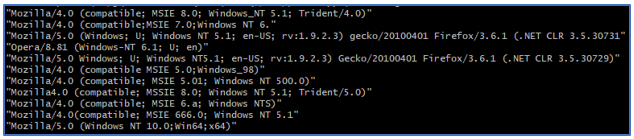
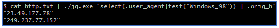
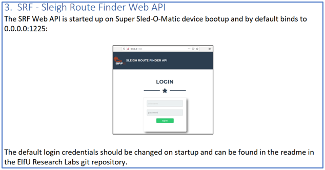
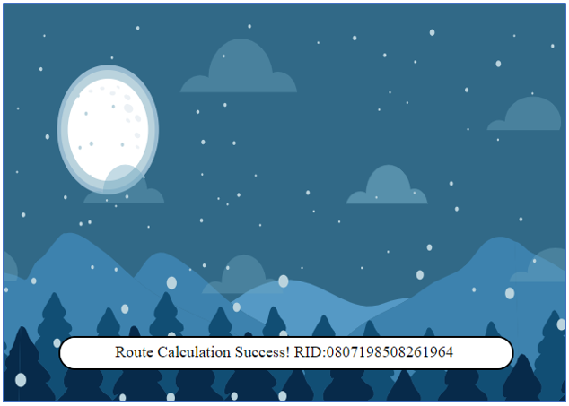

12) Filter Out Poisoned Sources of Weather Data¶
Challenge¶
Difficulty: 4/5
Use the data supplied in the Zeek JSON logs to identify the IP addresses of attackers poisoning Santa’s flight mapping software. Block the 100 offending sources of information to guide Santa’s sleigh through the attack. Submit the Route ID (“RID”) success value that you’re given. For hints on achieving this objective, please visit the Sleigh Shop and talk with Wunorse Openslae.
Answer¶
0807198508261964
Solution¶
1. Discovery¶
To solve this challenge we had to analyse the supplied Zeek JSON logs and determine the IP addresses of approximately 100 sources performing the following classes of attacks:
SQLi - the insertion of a SQL query via the input stream from the client to the application
XSS - attacks where a malicious script is inserted into otherwise benign and trusted websites
LFI - attacks that include files on the local server that is being attacked
Shell Shock - attacks that exploit vulberabilities in the Bash shell
In addition we had to pivot on some of these sources to find additional sources.
The hints mention the use of the JQ tool to analyse the logs.
Note
JQ is a lightweight and flexible command-line JSON processor that can be downloaded from the https://github.com/stedolan/jq repository.
We had to enter all of these sources (approximately 100), as a string of comma separated IP addresses, into the firewall section of the supplied Sleigh Route Finder API.
A secondary challenge was to find the username/password for the API.
The main difficulties with this challenge included the uncertainty behind exactly what to match in our queries, the various querks with the JQ tool, and the uncertainty about where to find the username/password.
Starting artefacts¶
2. Solving the challenge¶
Preprocessing the zeek logs¶
After an initial look at the data scan we noticed that a few of the keys included special characters that were either not consistently handled by JQ or required extra attention. Instead of continuously have to work around these issues we modified the log file with the following command which removes the id. prefix from the JSON keys:
cat http.log | ./jq.exe '.[] | with_entries( if .key | contains("id.") then .key |= sub("id.";"") else . end)' > ./http.txt
SQLi query¶
We used the following commands to identify the source of SQLi attacks:
cat http.txt | ./jq.exe 'select(.uri|test("UNION")) | .orig_h' ==> returned 16 IP addresses
cat http.txt | ./jq.exe 'select(.user_agent|test("UNION")) | .orig_h' ==> returned 9 IP addresses
cat http.txt | ./jq.exe 'select(.username|test(" or ")) | .orig_h' ==> returned 4 IP addresses
XSS query¶
We used the following commands to identify the source of XSS attacks:
cat http.txt | ./jq.exe 'select(.uri|test("<")) | .orig_h' ==> returned 9 IP addresses
cat http.txt | ./jq.exe 'select(.host|test("<")) | .orig_h' ==> returned 7 IP addresses
LFI query¶
We used the following command to identify the source of LFI attacks:
cat http.txt | ./jq.exe 'select(.uri|test("/etc/passwd")) | .orig_h, .uri' ==> returned 11 IP addresses
Shell Shock query¶
We used the following command to identify the source of Shell Shock attacks:
cat http.txt | ./jq.exe 'select(.user_agent|test(":;")) | .orig_h, .user_agent' ==> returned 6 IP addresses
Pivoting¶
Finding out how to pivot on the returned entries was tricky and we went down several deadends. We finally noticed that the challenge was designed to be pivoted on the user_agent keys. In each case, the user_agent value contained either a misspelling or some unique text that corresponded to exactly 2 IP addresses (the original attack and the pivoted attack).
The list of user_agent values was obtained using the following commands:
cat http.txt | ./jq.exe 'select(.uri|test("UNION")) | .user_agent' ==> produced 16 unique IP addresses
cat http.txt | ./jq.exe 'select(.uri|test("<")) | .user_agent' ==> produced 9 unique IP addresses
cat http.txt | ./jq.exe 'select(.uri|test("/etc/passwd")) | .user_agent' ==> produced 11 unique IP addresses
An example of the user_agent values is shown in the following figure:
The final step is to perform a search for additional IP addresses based on the user_agent value. An example of such a search could be something like the following. In this challenge, each successful query returns exactly 2 IP addresses (the original attack and the pivoted attack).
Note
To find the IP addresses based on the user_agent values, we found it easier to use a text editor and avoid the issues associated with special characters that were inherent with the ZQ tool.
Formatting the data¶
The firewall UI needed a set of comma separated IP addresses. The following image shows what our list of IP addresses looked like: .. image:: /images/o12-submitted-ip-addresses.png
Accessing the Sleigh Route Finder API¶
The Sleigh Route Finder API required a username/password that were not supplied when the objective was provided to us.
After a lot of frustration we discovered a hint in the document that we had recovered as part of Objective 10. The hint was as follows:
We finally worked out that the readme document could be retrieved from the following URL: README.md
The README.md document gave the following information:
#### Logging in:
You can login using the default admin pass:
`admin 924158F9522B3744F5FCD4D10FAC4356`
Submitting the data¶
We copied/pasted the set of IP addresses into the firewall UI and pressed the DENY button.
The firewall page gave us the following feedback:
